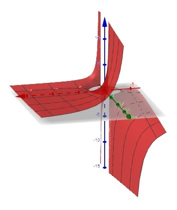
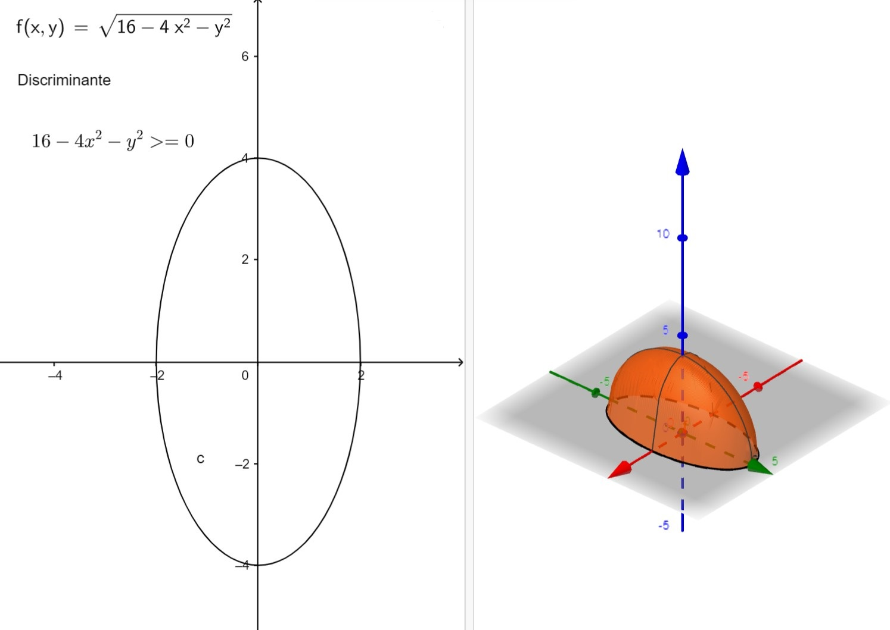
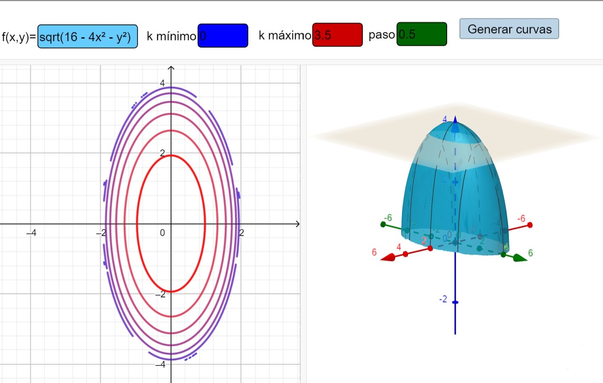
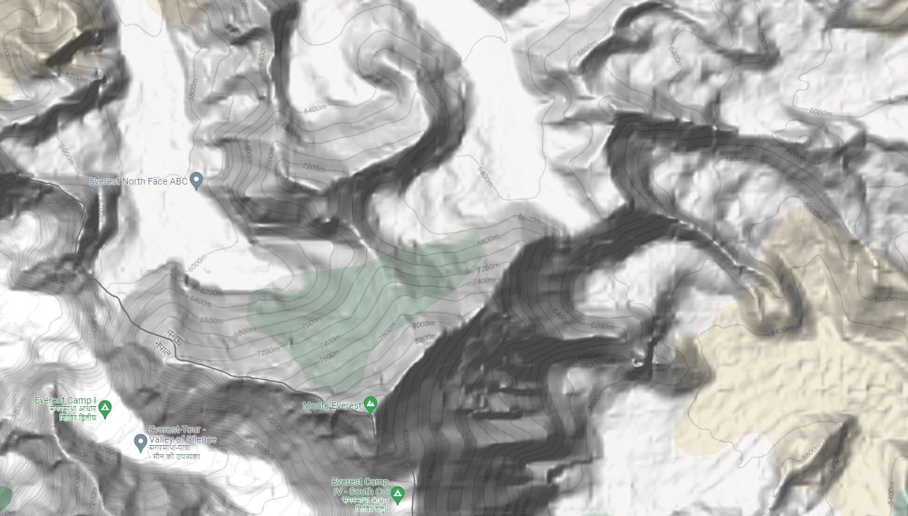
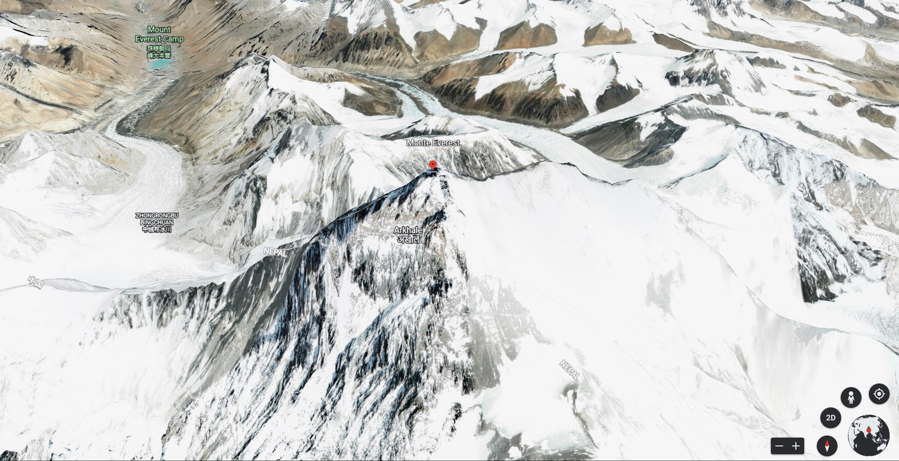
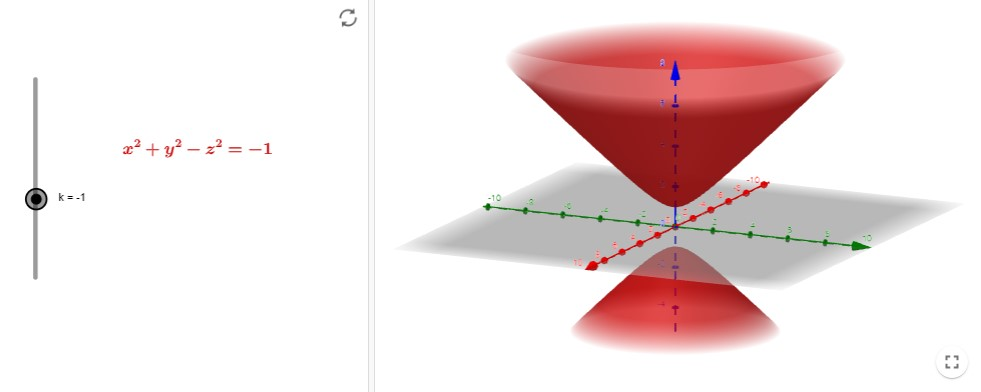
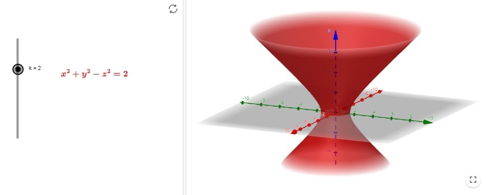

Funciones de varias variables
Contents
2.1. Funciones de varias variables#
2.1.1. Definición#
Definition (Función de varias variables)
Sean \(D\) un subconjunto de \(\mathbb{R}^n\). Una función \(f\) de \(n\) variables con dominio \(D\) es una aplicación que lleva cada punto de \(D\) en un número real, \(f(\mathbf{x}) \in \mathbb{R}\).
Llamaremos rango al conjunto de valores \(f(D)\subset\mathbb{R}\).
En general, nos moveremos con funciones de dos o tres variables,
\(f(x,y)\),
\(f(x,y,z)\).
Vamos ahora a practicar calculando el dominio máximo (el mayor conjunto en \(\mathbb{R}^{n}\) en el que es posible dar valores a una función) en un par de casos concretos:
Example
Calcula el dominio máximo de las siguientes funciones:
\(f(x,y) = \displaystyle\frac{ \sqrt{x^2+y^2-9} }{x}\).
\(g(x,y,z) = \displaystyle \frac{ x }{ \sqrt{9-x^2-y^2-z^2} }\).
Aunque todavía no hemos definido lo que es el gráfico de una función de dos variables, vamos a adelantarnos un poco (leve spoiler) para mostraros el de la función \(f\). Lo haremos a través de la siguiente aplicación de Allan Avendaño en Geogebra: https://www.geogebra.org/m/kKtwRZsy
{kind=link}
Antes de intentar hacer a mano los ejercicios, debemos indicar que para el cálculo del dominio o el rango de una función de varias variables, Sympy tiene graves limitaciones. De hecho, sólo es capaz de calcular singularidades (el dominio será el complementario de las singularidades) o rango de una función en una variable, por lo que debemos fijar todas las variables menos una… y luego echarle imaginación para completar el ejercicio.
Valga lo siguiente como ejemplo:
import sympy as sp
x = sp.Symbol('x', real = True)
y = sp.Symbol('y', real = True)
f_exp = sp.sqrt( x**2 + y**2 -9 )/x
f=sp.Lambda((x,y), f_exp)
print("Singularidades respecto x: ", sp.calculus.singularities(f(x,y), x))
print("Singularidades respecto y: ", sp.calculus.singularities(f(x,y), y))
Rx = sp.calculus.util.function_range(f(x,1), x, sp.Reals)
Ry = sp.calculus.util.function_range(f(1,y), y, sp.Reals)
Ryn = sp.calculus.util.function_range(f(-1,y), y, sp.Reals)
display(Rx)
display(Ry)
display(Ryn)
Singularidades respecto x: {0}
Singularidades respecto y: EmptySet
Property (Operaciones con funciones de varias variables )
Suma o diferencia: \(\left(f\pm g\right) (x,y) = f(x,y) \pm g(x,y)\) (análogo para funciones de tres variables).
Producto: \(\left( fg \right)(x,y) = f(x,y)g(x,y)\).
Cociente: \(\displaystyle\frac{f}{g}(x,y) = \frac{f(x,y)}{g(x,y)}\), \(g(x,y)\neq 0\).
Observa que no es posible componer dos funciones reales de varias variables, ya que el rango de la primera no va a estar contenido dentro del dominio de la segunda:
\(f:\mathbb{R}^{2}\to\mathbb{R}\), \(g:\mathbb{R}^{2}\to\mathbb{R}\), \((g\circ f)(x,y) = g(f(x,y))=\)? No tiene sentido, ya que \(f(x,y)\in\mathbb{R}\) y \(g\) necesita un dato en \(\mathbb{R}^{2}\).
Sí podemos componer \(f:\mathbb{R}^{2}\to\mathbb{R}\), \(g:\mathbb{R}\to\mathbb{R}\).
Definition (Funciones polinómicas y racionales de varias variables )
Se llama función polinómica de dos variables a una función que es suma de términos de la forma \(Cx^{m}y^{n}\), siendo \(C\) un número real. Por ejemplo,
\[ p(x,y) = 5x^3y^2+\pi x^2y^2 -\frac{ \sqrt{3} }{2} xy^2 + 2. \]Se llama función polinómica de tres variables a una función que es suma de términos de la forma \(Cx^{m}y^{n}z^{p}\). Por ejemplo,
\[ p(x,y,z) = -3x^3y^2z^4+\sqrt{2} x^2y^2z +\frac{ \pi }{2} xy^2 + z. \]Se llama función racional al cociente de dos funciones polinómicas. Por ejemplo,
\[ r(x,y,z) = \frac{ x^2y^3z-\frac{3}{2} xz^2+3 }{ y^2 - 1 }. \]
2.1.2. Gráficas de funciones de dos variables#
Definition (Gráfica de una función de dos variables )
La gráfica de una función \(f\) de dos variables es el conjunto de todos los puntos \((x,y,z)\in\mathbb{R}^{3}\) tales que:
\((x,y)\in \text{Dominio}(f)\),
\(z = f(x,y)\).
{kind=link}
A modo de ejercicio, puedes intentar esbozar la gráfica de la función \(f(x,y) = \sqrt{16 - 4x^2 - y^2}\), que te mostramos a continuación (utilizando la aplicación ya citada de Allan Avendaño en Geogebra).
{kind=link}
2.1.3. Curvas de nivel#
Una alternativa para las gráficas 3D de una función de dos variables, son las curvas de nivel.
En este caso, se dibuja sobre el dominio, sobre el plano \(XY\), las líneas en cuyos puntos se obtiene el mismo valor para \(f(x,y)\). En general, se mostrarán distintas curvas, \(f(x,y) = C_{n}\), con las constantes \(C_{n}\) separadas de manera homegénea (por ejemplo, \(C_{1} = 0\), \(C_{2} = 10\), \(C_{3} = 20\), etc.).
Podemos, por ejemplo, visualizarlas con la aplicación de de Geogebra creada por Laura del Río: https://www.geogebra.org/m/xdhszm68. Por ejemplo, para la función \(f(x,y) = \sqrt{16 - 4x^2 - y^2}\), cuya gráfica podéis ver un poco más arriba,
{kind=link}
Realmente, estamos bastante habituados a utilizar este tipo de representaciones. Por ejemplo, pensemos en los mapas de isobara que se usan en meteorología, como esta imagen que hemos tomado de la web de meteogalicia, https://www.meteogalicia.gal/observacion/satelite/sateliteProduto.action?tipo=isobaras,
{kind=link}
O cuando visualizamos un mapa con las curvas de nivel que corresponden a alturas constantes, como en esta imagen alrededor del monte Everest, extraída de Google Maps:
{kind=link}
¿Eres capaz de recomponer, a partir de estas curvas de nivel, la imagen real de la montaña, más o menos como se puede ver en Google Earth?
{kind=link}
Y, ¿podemos representar las curvas de nivel de una función de dos variables con Matplotlib? Pues, ¡me alegra que me haga usted esa pregunta! Sí, con la instrucción contour.
También podemos hacer un mapa de colores con contourf.
import numpy as np
import matplotlib
import matplotlib.pyplot as plt
N = 50 # 50 puntos en cada dirección dos eixes cartesianos
x = np.linspace(-2, 2, N)
y = np.linspace(-4, 4, N)
X, Y = np.meshgrid(x, y)
f_exp = np.sqrt(16 - 4*X**2 - Y**2)
# Va a dar un warning porque hay puntos en la malla (por ej., el (-2,4))
# que ocasionan un negativo en la raíz
# Curvas de nivel
p = plt.contour(X, Y, f_exp)
plt.clabel(p) # Añade el valor numérico de cada curva de nivel
# Etiquetas de los ejes
plt.xlabel('x')
plt.ylabel('y')
plt.axis('square')
plt.xlim(-2,2)
plt.ylim(-4,4)
plt.show()
# Colores sobre el dominio
p = plt.contourf(X, Y, f_exp)
plt.colorbar() # Añade la barra de colores con los valores asociados
# Etiquetas de los ejes
plt.xlabel('x')
plt.ylabel('y')
plt.axis('square')
plt.xlim(-2,2)
plt.ylim(-4,4)
plt.show()
C:\Users\Luis Hervella\AppData\Local\Temp\ipykernel_31716\2573029777.py:10: RuntimeWarning: invalid value encountered in sqrt
f_exp = np.sqrt(16 - 4*X**2 - Y**2)
Os dejamos propuesto un ejercicio, para el que podéis utilizar Python.
EJERCICIO: Esbozar las curvas de nivel de las siguientes funciones:
\(\displaystyle f(x,y) = \sqrt{64 - x^2 - y^2}\).
Función de producción de Cobb-Douglas: \(\displaystyle f(x,y) = C x^{a}y^{1-a}\), donde \(C\) y \(a\) son constantes con \(0<a<1\).
2.1.4. Superficies de nivel#
Si cambiamos de dos a tres variables, debemos generalizar la idea de curva de nivel (dos variables) hasta llegar a la superficie de nivel (tres variables).
Entonces, si \(f\) es una función que depende de tres variables y \(C\) es una constante, entonces la gráfica de la ecuación
es una superficie de nivel para f.
Mostramos a continuación las superficies de nivel con \(C=-1\) y \(C=2\), respectivamente, para la función \(f(x,y,z) = x^2 + y^2 - z^2\). Las hemos obtenido en https://www.geogebra.org/m/Y53M7bM8, aplicación en Geogebra de Ana Breda.
 {kind=link}
{kind=link}
Aquí puedes, jugando con \(C\) y con la expresión, visualizar superficies de nivel para diferentes funciones (está escrito para replicar la primera de las dos imágenes anteriores).
Como ejercicio te proponemos que pienses en las superficies de nivel con valores \(C=0\), \(C=4\) y \(C=16\) para la función \(\displaystyle f(x,y,z) = 4x^2 + y^2 + z^2\).
import numpy as np
import matplotlib
import matplotlib.pyplot as plt
# Inicialización de la representación 3D
fig = plt.figure()
ax = plt.axes(projection="3d")
# Creación de la nube de puntos (50 puntos en cada eje, x e y)
N = 100 # 100 puntos en cada dirección dos eixes cartesianos
x = np.linspace(-10, 10, N)
y = np.linspace(-10, 10, N)
X, Y = np.meshgrid(x, y)
C = -1
Z1 = np.sqrt(X**2+Y**2-C)
Z2 = -np.sqrt(X**2+Y**2-C)
# Representación de la superficie
surf = ax.plot_surface(X, Y, Z1)
surf = ax.plot_surface(X, Y, Z2)
# Etiquetas de los ejes
ax.set_xlabel('x')
ax.set_ylabel('y')
ax.set_zlabel('z')
# Orientamos los ejes
ax.azim = 60
ax.elev = 20
plt.show()